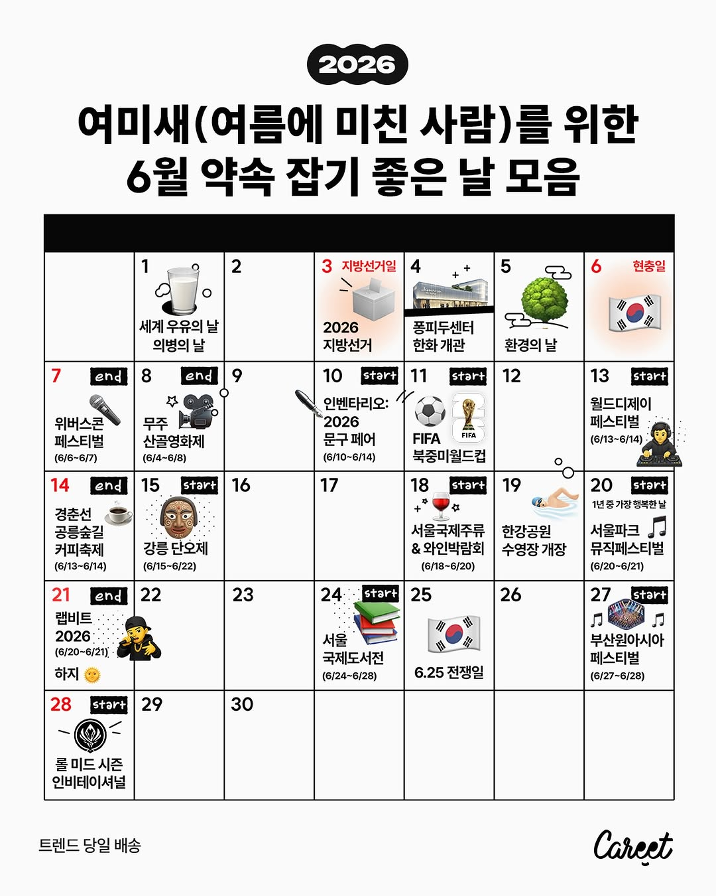
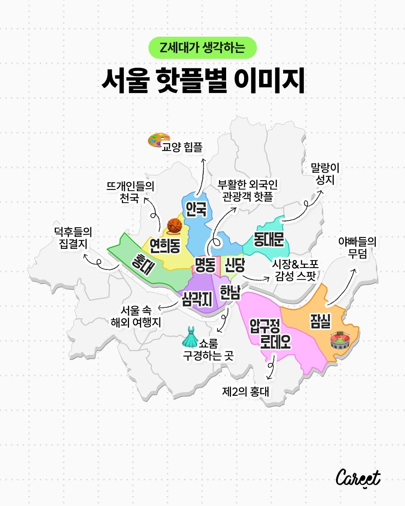
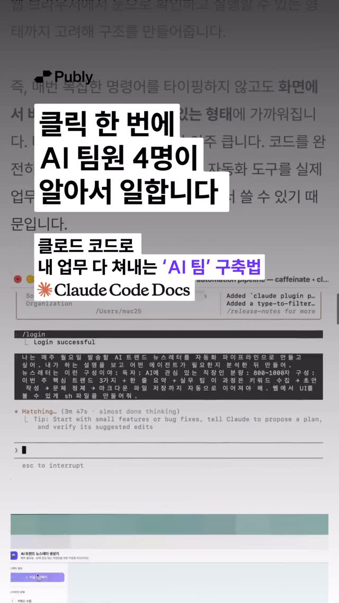

🔍 분석됨⛱️ 여미새(여름에 미친 사람)를 위한 6월 달력을 공개합니다!
여름 좋아 인간이 행복해지는 계절이 돌아왔습니다🍉☀️🌿
본격적으로 더워지기 전, 푸릇푸릇한 초여름을 만끽하시길 바라는 마음으로 약속 잡기 좋은 날들을 모아봤어요.
다양한 페스티벌과 박람회는 물론, ‘1년 중 가장 행복한 날’까지 기다리고 있는데요.
밤 8시에도 해가 지지 않는 계절을 잔뜩 즐겨보세요!
@@ 6월에 같이 행복해지고 싶은 사람
Instagram에서 열기
🔍 분석 보기 (체크 항목이 BSD/CCD로 전송)
⚠ distinctive_design_avoid_close_emulation — 직접 복제 회피, *추상 패턴*만 차용
🔍 분석됨📑 4장
📚 서울국제도서전 개막이 하루 앞으로 다가왔어요!
서울국제도서전에 참여하는 출판사들이 부스 이벤트와 굿즈 라인업을 공개하면서 시작 전부터 엄청난 화제성을 모으고 있는데요. 아직 어떤 부스를 방문해야 할지 고민 중인 분들을 위해 부스 추천 들어갑니다!
작년부터 서울국제도서전만 손꼽아 기다려온 캐릿 에디터가 취향껏 골라온 ‘굿즈 맛집’ 부스 8곳을 모아봤어요. 실용적인 독서 아이템부터 가방에 달고 다니고 싶은 귀여운 키링까
Instagram에서 열기
🔍 분석 보기 (체크 항목이 BSD/CCD로 전송)

🔍 분석됨‘홍대’ 하면 클럽, ‘동대문’ 하면 옷 가게 떠올리는 사람 = 옛날 사람 🙄
@ 요즘 핫플 이미지는 이렇대!
📍홍대
- 아이돌팬들이 생카 자주 여는 동네
- 애니팬들은 AK플라자에 다 모임
📍연희동
- '바늘이야기' 가면 뜨개인 다 만남
- 아기자기한 감성 소품샵도 많음
📍안국
- '국현미' 등 미술관, 갤러리 구경하기 좋음
- 한복 입고 고궁 체험도 인기
📍동대문
- 완구거리에 말랑이 사러 감
- 종합상가에
Instagram에서 열기
🔍 분석 보기 (체크 항목이 BSD/CCD로 전송)
📑 5장
#광고
마케터라면 적절한 협업처와 컨택포인트를 찾느라 하루를 다 쓴 경험, 누구나 있으실 텐데요. CJ ENM이 그런 여러분께 도움이 될 ‘캘박CJ’서비스를 오픈했어요.
✅캘박CJ가 뭐야?
- CJ 전사의 주요 향후 3개월 치 콘텐츠·시네마·음악/공연·이벤트 일정이 모여있음!
- 광고상품설명서는 물론 1:1 문의까지 한 번에 가능함 (이제 컨택 포인트 찾느라 시간 낭비할 필요 없다..🥹)
✅어디에 써먹을 수 있어?
-
Instagram에서 열기
📑 6장
좋은 마케팅을 선보이는 것만큼 중요한 것은 바로…
.
.
.
예기치 못한 실수로 소비자에게 부정적인 인식을 심어주지 않는 거죠. 특히 아주 작은 포인트 하나가 소비자의 마음을 사로잡기도, 반대로 멀어지게 만들기도 하는데요. 그래서 준비했습니다! ✍️
마케터·디자이너·PM 등 현직자 17명이 실무에서 겪은 시행착오를 바탕으로 ‘마케팅 분야별 리스크 체크리스트’를 정리해 봤어요. 이벤트 운영 전에 반드시 확인해야 할 리스크, 디
Instagram에서 열기
📑 2장
#광고 야구는 좋지만 그렇다고 매일 경기만 보기엔 죄책감 드는 대학생, 취준생분들 손들어 주세요 🙋
야구는 원래 ‘기록의 스포츠’라고 하죠. 데이터 분석을 통해 야구를 한층 더 재미있게 즐기면서 동시에 실무 경험까지 쌓을 수 있는 대외활동이 있습니다. 바로 LG그룹이 운영하는 청년 AI 교육 프로그램 ‘LG Aimers’가 그 주인공이에요.
LG 그룹의 실제 데이터를 활용한 해커톤부터 전문적인 AI 교육을 경험할 수 있는
Instagram에서 열기
📑 6장
우리나라 트렌드 맨날 바뀜 ㄷㄷ
요즘에 이런 생각 해본 적 있으시죠? 캐릿이 검색량 분석 서비스 '블랙키위'를 기반으로 분야별 트렌드 지속 기간이 며칠인지 분석해 보았는데요. F&B, 취미, 헬스케어, 굿즈, 캐릭터 등 분야마다 기간이 천차만별이더라고요. 그 특징을 그래프로도 정리해 봤습니다!
소비자들의 트렌드 소비 방식 등 보다 자세한 내용이 궁금하시면 캐릿 홈페이지에서 🔎트렌드 지속 기간을 검색해 보세요!
@ F
Instagram에서 열기
📑 5장
👀이번달에 뭐가 유행했더라? 주요 아이템만 모았음
[굿즈] 느낌 좋은 소리, 감각을 느낄 수 있는 굿즈가 대세
[패션] 쪼리양말부터 팔토시까지! 여름용 패션템 대유행 중
[푸드] 성심당 메론1통케이크 구하려면 새벽 오픈런 필수라던데? 지금은 메론 전성시대
[핫플] 제2의 에러혼으로 불리는 이곳은? 국내 로컬 맛집까지
Instagram에서 열기
📑 7장
🎤 공무원 컷을 높인, 화제의 릴스 주인공! 울산광역시 남구청 정책미디어과 남영식 주무관과 인터뷰를 나눴습니다.
이 영상, 어디까지 연출이고 어디까지 연기일까요?
더 자세한 내용이 궁금하신 분들은 캐릿 홈페이지에서 🔎울산남구를 검색해 주세요!
Instagram에서 열기
📑 6장
#광고 두쫀쿠부터 버터떡까지, 눈 뜨면 바뀌는 F&B 트렌드👀
이 와중에 11년째 살아남은 디저트가 있었으니…
ㄴ 그 주인공은 바로 투썸플레이스 ‘아박’🍰
Z세대가 꼽은 아박 롱런 비결은?
“맛의 퀄리티는 기본이고,
내 취향대로 응용해서 먹는 재미가 있기 때문이에요”
최근 투썸은 ‘아박은 뭘 해도 아박’이라는 캠페인 메시지 아래
초코 크런치·딸기 초코 크런치 한정판 아박 2종도 출시했다는 소식!
여기에 원희가 추천하
Instagram에서 열기
▶ 27,156회
인사담당자가 포트폴리오 보는 시간 단 3초!!!!?🥵
같은 경험이라도 어떻게 보여주느냐에 따라
‘평범한 지원자’가 될 수도, ‘뽑고 싶은 지원자’가 될 수도 있다는 사실!
이번엔 같은 경험도 훨씬 잘해 보이게 만드는
포트폴리오 시각화 템플릿을 준비했어요💝
댓글에 ‘시각화’ 남겨주시면 보내드릴게요📩!
Instagram에서 열기
🔍 분석 (파싱 실패)
LLM 응답 파싱 실패 — raw 보존됨

▶ 3,750회💬 지금 바로 팔로우하고 댓글에 [클로드] 남겨주세요!
→ 실무 노하우 정리된 링크, DM으로 보내드려요 📩
🚨 팔로우 안 하면 DM 전달이 어려워요! 꼭 먼저 팔로우해주세요.
💡 10분 안에 이런 내용을 알려드려요!
’조금 더 똑똑한 검색창‘ 수준에서 벗어나 AI를 업무 파트너로 세팅하는 법비개발자도 자연어만으로 AI 에이전트 팀을 만드는 4단계 실습회의록·보고서·SNS 배포, 반복 업무 3가지를 AI에게 통째로 넘기는프
Instagram에서 열기
🔍 분석됨📑 7장
💬 지금 바로 팔로우하고 댓글에 [일잘러] 남겨주세요!
→ 실무 노하우 정리된 링크, DM으로 보내드려요 📩
🚨 팔로우 안 하면 DM 전달이 어려워요! 꼭 먼저 팔로우해주세요.
일잘러들은 다 한다는 일 기록, 나도 해볼까?
기록해 두는 게 좋다고는 하니, 나도 해보고 싶은데...
막상 시작하려고 하면 뭐부터 써야 할지가 막막하실 거예요.
✅ 월말, 분기별, 매년 내가 무슨 일을 했는지 기억이 나지 않아서 허무해!
✅
Instagram에서 열기
🔍 분석 보기 (체크 항목이 BSD/CCD로 전송)
📑 9장
💬 지금 바로 팔로우하고 댓글에 [클로드] 남겨주세요!
→ 실무 노하우 정리된 링크, DM으로 보내드려요 📩
🚨 팔로우 안 하면 DM 전달이 어려워요! 꼭 먼저 팔로우해주세요.
무료 자료엔 절대 없는, 진짜 클로드 실무 적용기
👉3일만 무료 공개합니다!
Instagram에서 열기
▶ 3,736회
💬 지금 바로 팔로우하고 댓글에 [퍼블리] 남겨주세요!
→ 실무 노하우 정리된 링크, DM으로 보내드려요 📩
🚨 팔로우 안 하면 DM 전달이 어려워요! 꼭 먼저 팔로우해주세요.
💡 10분 안에 이런 내용을 알려드려요!
누구나 10분이면 끝나는클로드 코드 설치 가이드”내 컴퓨터 정보 알려줘“ 한 마디로 하드웨어·파일 분석 직접 해보기말 한마디로고양이 댄싱 웹 페이지 만들고 인터넷에 올리기
Instagram에서 열기
▶ 3,024회
💬 지금 바로 팔로우하고 댓글에 [포폴] 남겨주세요!
→ 실무 노하우 정리된 링크, DM으로 보내드려요 📩
🚨 팔로우 안 하면 DM 전달이 어려워요! 꼭 먼저 팔로우해주세요.
💡 10분 안에 이런 내용을 알려드려요!
”경험은 충분한데 왜 떨어질까?“ 인사담당자의 시선을 사로잡는가독성 설계법프로젝트 과정부터 개선 경험까지, 내 역량을 증명하는시각화 레이아웃 3가지채우기만 하면 합격선으로 올라가는 PPT 시각화 템플릿 제공 🎁
Instagram에서 열기
🔍 분석됨📑 8장
#광고 오늘도 보고서 만들고 회의록 정리하고 자료 찾느라 하루가 순식간에 지나가진 않았나요? 😮💨 "퇴근하면 좀 쉬어야지" 다짐하지만 어느새 야근 중이고, 여름휴가 계획은 또 다음으로 미뤄두고 있다면 주목해봐요.
퍼블리가 6월 한정 생산성 패키지를 준비했거든요. AI 활용법부터 실무 템플릿까지, 반복 업무에 쓰는 시간을 줄이고 더 중요한 일에 집중할 수 있도록 도와줘요. ✨
이번 프로모션은 6월이 지나면 만나기 어려운
Instagram에서 열기
🔍 분석 보기 (체크 항목이 BSD/CCD로 전송)
⚠ distinctive_design_avoid_close_emulation — 직접 복제 회피, *추상 패턴*만 차용
▶ 868회
💬 지금 바로 팔로우하고 댓글에 [퍼블리] 남겨주세요!
→ 실무 노하우 정리된 링크, DM으로 보내드려요 📩
🚨 팔로우 안 하면 DM 전달이 어려워요! 꼭 먼저 팔로우해주세요.
💡 10분 안에 이런 내용을 알려드려요!
퇴근길 사람인 눈팅만 1년째, 이직 준비를 시작조차 못 했던 진짜 원인기업 조사부터 자소서·면접까지, 노션 하나로 끝내는 이직 올인원 대시보드 🎁서류 준비 시간을 절반으로 줄여줄 ’매일 10분 경험 정리‘ 루
Instagram에서 열기
📑 8장
💬 지금 바로 팔로우하고 댓글에 [퍼블리] 남겨주세요!
→ 역대급 할인 혜택 링크, DM으로 보내드려요 📩
🚨 팔로우 안 하면 DM 전달이 어려워요! 꼭 먼저 팔로우해주세요.
산더미 같은 업무는 퍼블리 AI 치트키에 맡겨두고 올여름엔 당당하게 로그아웃하세요!
💁🏻♂️퍼블리 멤버십 30% 할인
🏝️호텔스컴바인 25% 할인
🎨캔바 3개월 무료 체험권
🤖썸트렌드 mcp 크레딧 지원까지
선착순 혜택까지 놓치지 마세요!
👉🏻지
Instagram에서 열기
▶ 648회
💬 지금 바로 팔로우하고 댓글에 [퍼블리] 남겨주세요!
→ 실무 노하우 정리된 링크, DM으로 보내드려요 📩
🚨 팔로우 안 하면 DM 전달이 어려워요! 꼭 먼저 팔로우해주세요.
💡 10분 안에 이런 내용을 알려드려요!
통계 이미지 분석부터 그래프 생성까지!제미나이 데이터 분석법 4가지데이터 인사이트에 설득력을 더해줄기획의 구조와 계획을 잡는 방법먼저 써본 일잘러가 예시로 알려주는제미나이 프롬프트 모음집까지
Instagram에서 열기
🔍 분석됨📑 5장
"밖에서 건물 1층이 안 보인다?
오히려 좋았죠"
시스 아나키 라이브러리는
희귀 아트서적
예약제 도서관입니다.
이 공간의 킥은?
건물 입구가 숨겨져 있는 것.
노희수 대표는
정말 궁금한 사람만 찾아와
즐겼으면 하는 마음으로
이 곳을 만들었어요.
직접 와서 펼쳐봐야만 만날 수 있는
시스 아나키만의 숨겨진 경험은?
<나다운공간④ "4년간 4천권 모아" 국내최초 예술서적 라이브러리>
✶ 아티클 전문은 폴인 folin.co
Instagram에서 열기
🔍 분석 보기 (체크 항목이 BSD/CCD로 전송)
⚠ distinctive_design_avoid_close_emulation — 직접 복제 회피, *추상 패턴*만 차용
🔍 분석됨📑 14장
도서전 덕질 6년 차 디자이너가 만든
2026 서울국제도서전 굿즈?
신문지 컨셉 '피크닉 매트'부터
폴인 독자들이 사랑한 문장 담은
'신문 엽서'까지!
폴인 디자이너 그레이스에게
굿즈 제작 비하인드 들어봤습니다.
#서울국제도서전 #굿즈 #도서전
Instagram에서 열기
🔍 분석 보기 (체크 항목이 BSD/CCD로 전송)
🔍 분석됨📑 5장
"세상에 과거에만 머무르라는 업종이 어디있어요?"
의료진이 진료에만 집중할 수 있도록
EMR 등 인프라를 만드는
메디테크 기업 '인티그레이션'
미래 의학으로 인정받지 못하며
제대로 된 의료기기도, 정책도 없던
한의계에서 느낀 불만과 문제를
창업으로 풀었다고요.
정희범 대표가 인티그레이션으로
그리는 한의계 미래, 어떤 모습일까요?
<"분노로 창업→한의사 85% 가입한 플랫폼 만들다" 정희범 대표>
✶ 아티클 전문은 폴인
Instagram에서 열기
🔍 분석 보기 (체크 항목이 BSD/CCD로 전송)
📑 13장
"결국 좋은 콘텐츠 뒤에는 좋은 사람이 있다."
'어떻게 10년 전 기획이
다시 통했을까?'란 질문에서 시작된
<냉장고를 부탁해: 팀십의 비밀> 시리즈.
팀 냉부 인터뷰로 찾은 건
화려한 기술이 아닌
'신뢰로 결과 만드는 법'이었다고요.
냉부 시리즈 기획 비하인드,
제인 에디터에게 직접 들어봤습니다.
#냉장고를부탁해 #권성준 #김풍
Instagram에서 열기
▶ 10,449회
"한국에서 가장 똑똑한 사람들은 어디로 갈까?"
토스·우아한형제들·쿠팡의
잠재력을 가장 먼저 알아본
알토스벤처스의 투자법입니다.
우리나라에서 가장 똑똑한 사람들의
움직임을 보면 넥스트 비즈니스를
파악할 수 있다고요.
알토스벤처스 박희은 파트너는
투자 기준으로 2가지를 꼽아요.
①자기 생각과 색이 뚜렷한가?
②올바른 곳에 서 있는지를
스스로 끊임없이 검토하는가?
박희은 파트너가 물 밑에서
변화하는 시장을
빠르게 캐치하는
Instagram에서 열기
📑 5장
6년 차 주니어가 커리어 에세이를 썼다고?
이제 일이 손에 익기 시작한
3년 차, 회사가 청산됐습니다.
하루아침에 카피라이터→마케터로,
다시 막내가 됐죠.
농심 스낵마케팅팀
김화국 마케터 커리어 이야기입니다.
그가 커리어 굴곡을 겪으며
터득한 주니어 일잘러의 기준은?
<3년 차에 커리어 리셋, 막내 두 번 겪은 마케터가 일하는 법>
✶ 아티클 전문은 폴인 folin.co 에서 '마케터' 검색하세요!
✶ @folin_c
Instagram에서 열기
📑 5장
✨EVENT✨
지금 도서전 한정 패키지로 더중앙플러스 구독하고, ‘2026 서울국제도서전 초대권’의 주인공이 되어보세요!
✅ 서울국제도서전 초대권 추첨 이벤트
- 대상: 6/21(일)까지 도서전 패키지 구매 고객
- 혜택: 서울국제도서전 초대권 추첨 (총 20명, 1인 1매)
- 당첨 발표: 6/22(월) 구독 시 신청하신 번호로 당첨 문자 및 초대권 발송
** 구매 시, 자동 응모 됩니다!
👀 도서전 한정 패키지 혜택
Instagram에서 열기
📑 4장
2026 서울국제도서전,
폴인이 더중앙플러스와 함께 갑니다!
도서전 기념, 특별 혜택을 준비했습니다.
29,900원에 더중앙플러스 6+1개월 구독하고
2026 서울국제도서전 한정 패키지를 만나보세요!
🎁2026 서울국제도서전 한정 패키지
① 교보문고 30,000원 기프트카드
② 폴인 Plus 1개월 이용권
③ 현장 방문 시 선착순 굿즈 증정 (피크닉 매트 + 스티커팩)
알차게 준비한 선물, 놓치지 마세요!
📍한정 구
Instagram에서 열기
📑 6장
"소진 없는 경쟁하는 팀"
"버티려 힘주다 꺾이지 않는 팀"
'냉부' 팀십이 남다른 이유,
메인 PD 2인의 리더십에 있습니다.
맘껏 하게 하되 방향을 잡아주고,
스스로 해내는 경험을 만들어주어
누가 시키지 않아도
더 잘하고 싶은 마음이 들게 한다고요.
막내 PD부터 리더까지,
함께 성장하는 팀은 어떻게 만들어질까요?
<EP.4 "해내는 경험 만들어줘야" 메인PD 2인 리더십 성장기>
✶ 아티클 전문은 폴인 folin.
Instagram에서 열기
📑 5장
"무라카미 하루키를 모른다고?"
하루키 작가 신간 기념 팝업스토어가
성수동으로 향한 이유,
내부자 논리를 버린 결과입니다.
독자 반응을 직접 듣고
신작→작가 인지도 제고로
마케팅 방향을 바꿨다고요.
문학동네가 북클럽으로
내부에서 정의한 독자와
실제 독자 사이 간극을 메우는 법은?
<"하루키부터 알리자" 북클럽문학동네는 어떻게 마케팅 전략 바꿨나>
✶ 아티클 전문은 폴인 folin.co 에서 '북클럽문학동네' 검색하세요!
Instagram에서 열기
🔍 분석됨📑 16장
AI가 디자인도 만들고 코드도 짜주는 시대입니다.
그래서 많은 사람들이 묻습니다.
“앞으로 디자이너는 무엇으로 경쟁해야 할까요?”
《프로덕트 디자이너로 살아남기》의 저자 강영화님과 함께한 HFK 북토크에서 가장 인상 깊었던 것은 AI보다 오히려 사람의 역할에 대한 이야기였습니다.
강영화님은 스포카, 토스, 우주고양이 보라를 거쳐 지금은 AI 네이티브 영어 앱 엘스를 공동 창업해 미국 시장에 도전하고 있습니다. 그 과정에
Instagram에서 열기
🔍 분석 보기 (체크 항목이 BSD/CCD로 전송)
🔍 분석됨📑 10장
”AI가 내 작업을 대체하면 어떡하죠?“ 🤖💦
요즘 디자이너들 모이면 꼭 나오는 이야기입니다. 불안함은 당연합니다. 하지만 위기는 늘 기회와 함께 옵니다. 이제 우리는 ’그림‘이라는 수단을 넘어 ’본질‘에 집중할 수 있는 가장 강력한 조력자를 얻은 셈이니까요.
AI를 도구로 부리며, 더 큰 비즈니스 가치를 만드는 ’진짜‘ 프로덕트 디자이너의 길을 소개합니다. 👈
***
출판사 이오스튜디오에서, 13년 차 베테랑 디자이너
Instagram에서 열기
🔍 분석 보기 (체크 항목이 BSD/CCD로 전송)
⚠ distinctive_design_avoid_close_emulation — 직접 복제 회피, *추상 패턴*만 차용
🔍 분석됨📑 6장
“혼자 AI로 GTA 6를 만들 수 있을까?”
최근 X(twitter)에서 흥미로운 트윗을 발견했는데요.
앤트로픽의 최신 AI 모델인 Fable 5를 이용해, GTA 6같은 AAA급 게임을 만들겠다는 트윗이었습니다.
게임의 이름은 Caliber, GTA 6 규모(Caliber)라는 뜻과 동시에, 총기의 직경을 뜻하는 중의적인 의미를 담고 있는데요.
개인이 만드는 초대형 게임, 허무맹랑한 목표라고 보입니다.
하지만 매일 업
Instagram에서 열기
🔍 분석 보기 (체크 항목이 BSD/CCD로 전송)
📑 5장
💁♂️ “실리콘밸리 창업가들,
요즘 죄다 이거 차고 다닙니다”
얼마전 샌프란에 출장을 다녀온 팀원이
Whoop(웁)이라는 제품을 알려주었는데요,
찾아보니 더 흥미로운 회사였습니다.
Whoop은 디스플레이가 없는
피트니스 트래킹 밴드를 만듭니다.
화면이 없어 시간도, 알림도 확인할 수 없는
정말 그냥 밴드 그 자체인데요.
대신 24시간 심박수와 수면, 회복 상태 등을
조용히 측정해 건강 데이터를 분석해주죠.
얼마 전
Instagram에서 열기
▶ 372,336회
We put @jennyhoyoslol on the spot and got her takes on money and relationships! The last one was 🔥
#personalfinance #redflag
Instagram에서 열기
🔍 분석 (파싱 실패)
LLM 응답 파싱 실패 — raw 보존됨
 1/5
1/5Sometimes the things we complain about now are proof we made it farther than we’ve ever imagined. 💚
#PersonalFinance #MoneyMindset #FinancialWellness
Instagram에서 열기
🔍 분석 보기 (체크 항목이 BSD/CCD로 전송)
 🔍 분석됨▶ 7,890회
🔍 분석됨▶ 7,890회Is Kevin O'Leary right about Gen Z's $28 lunches? The math says no — but the spending IS telling you something about how young people feel about the economy 👇
💡 If you're caught in the doom-spending cycle:
→ Do the actual math on YOUR bi
Instagram에서 열기
🔍 분석 보기 (체크 항목이 BSD/CCD로 전송)
▶ 12,444회
Met up with @dollarswithdrew and found out his RED flags on money and relationships! Do you agree with that last one about weddings?
#personalfinance #redflag
Instagram에서 열기
▶ 14,632회
We went to CMA Fest in Nashville to ask country music fans about their financial red flags!
Comment “NERDY” for my list of top High-Yield Savings Accounts!
#personalfinance #redflag
Instagram에서 열기
▶ 14,939회
It’s not always about how much money you make, it’s how much you keep 💰
#personalfinance #lifestyleinflation #savingmoney
Instagram에서 열기
 ▶ 10,244회
▶ 10,244회Quiet luxury is dead. Loud, tacky wealth is the new status symbol — and it's not just a fashion trend. Here's what the shift from stealth wealth to Gilded Age aesthetics actually tells you about the economy, the wealth gap, and why you feel
Instagram에서 열기
📑 4장
Even when you’re down, patience usually pays off. 👏🏀
The dynamic duo 🤝
Pro-level move 👏✈️
Small game-time decisions have a major impact on your finances 🙂↕️
#nbafinals #smartmoney #personalfinance
Instagram에서 열기
▶ 20,720회
The goal isn’t to look rich.
It’s to become rich.
A six-figure income won’t save you if every raise turns into a bigger apartment, a newer car, and higher monthly payments.
Meanwhile, someone earning half as much can quietly build real we
Instagram에서 열기
▶ 6,583회
The Knicks are in the NBA Finals, and it wouldn't have happened without Jalen Brunson making one of the most counterintuitive financial moves in sports history. 🏀
In 2024, he left $113 million in guaranteed money on the table. And it might
Instagram에서 열기